3.2 밴디트 문제
이제부터는 강화 학습에서 다루는 구체적인 문제들을 예시를 통하여 살펴보겠습니다. 처음이니 가장 간단하면서도 강화 학습의 본질을 고스란히 품고 있는 밴디트 문제bandit problem에 대해서 알아 보도록 하겠습니다.
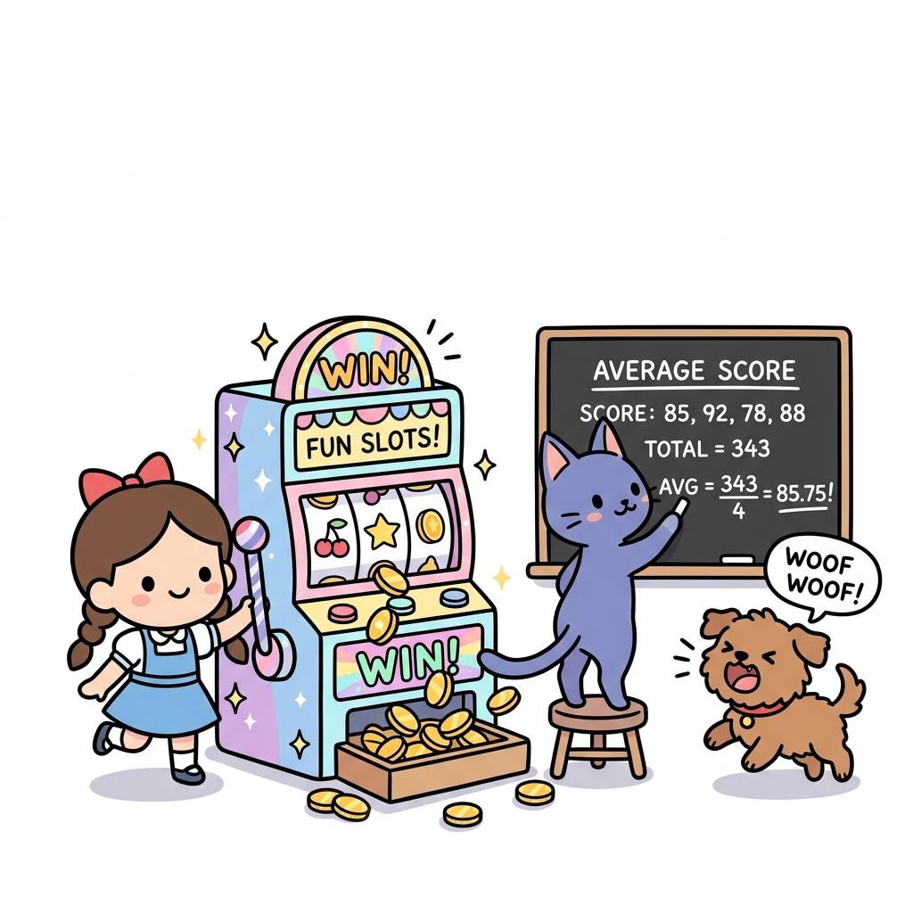
그림 03-2 슬롯머신 레버를 직접 당기며 점수 기댓값을 확인해 나가는 도로시와 칠판에 누적 평균 연산을 풀어주는 지니
지니가 칠판에 적어주는 동적 당첨 기댓값과 도로시의 실시간 기계 탐색 비유를 통해, 밴디트의 기본 보상 구조를 명쾌하게 이해해봅시다!
이 문제를 함께 해결해 가면서 강화 학습이 어떻게 문제를 바라보고 수식화하는지 명확하게 이해하게 될 것입니다.
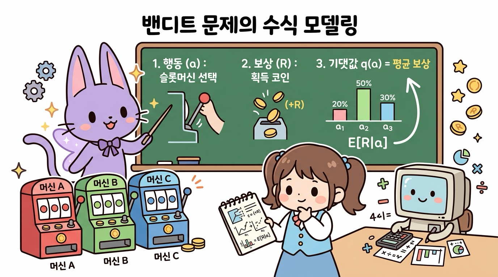
3.2.1 밴디트 문제란 무엇일까요
밴디트bandit는 오락실이나 카지노에서 흔히 볼 수 있는 ‘슬롯머신’의 또 다른 이름입니다.
슬롯머신 옆에 달린 손잡이(레버)를 당기면 내부 릴이 무작위로 돌아가다가 멈추며, 멈춰 선 그림 조합에 따라 플레이어가 획득하는 코인의 개수가 정해집니다.
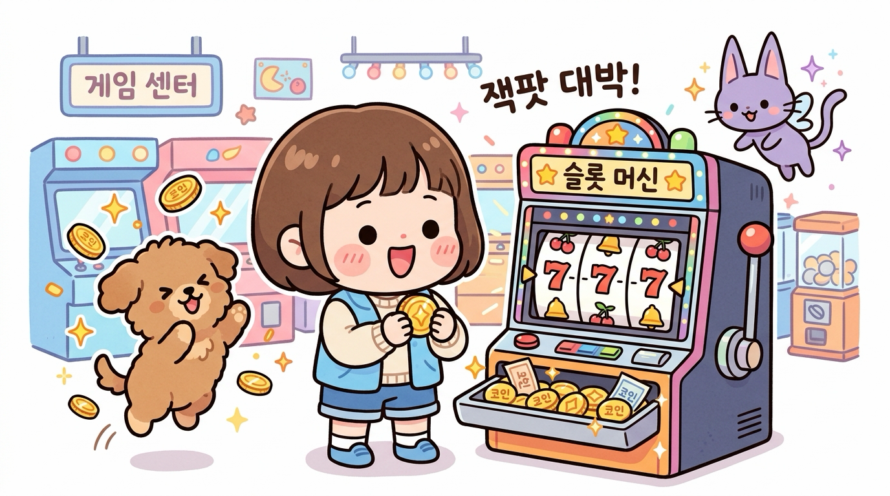
밴디트의 정의와 유래
밴디트bandit의 원래 의미는 영어로 ‘도적’ 혹은 ‘산적’입니다.
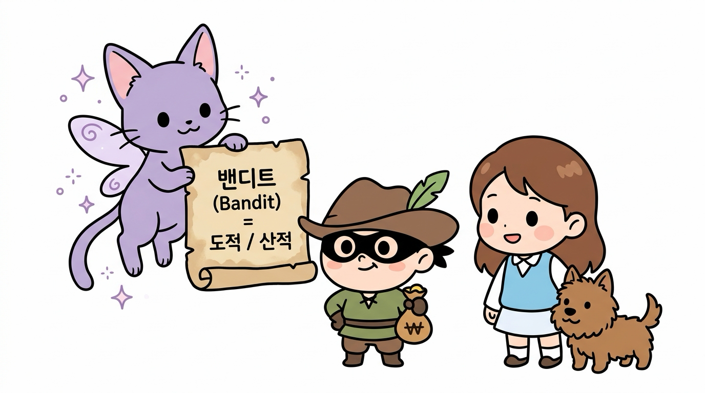
외팔이 도적
그런데 도박꾼들 사이에서 슬롯머신을 ‘외팔이 도적one-armed bandit‘이라고 부르기 시작했습니다. 손잡이가 옆에 단 하나만 달려 있어 ‘외팔이’ 같고, 한 번 빠지면 돈을 도둑맞은 것처럼 전부 잃게 된다고 해서 붙은 재미있는 별명입니다.
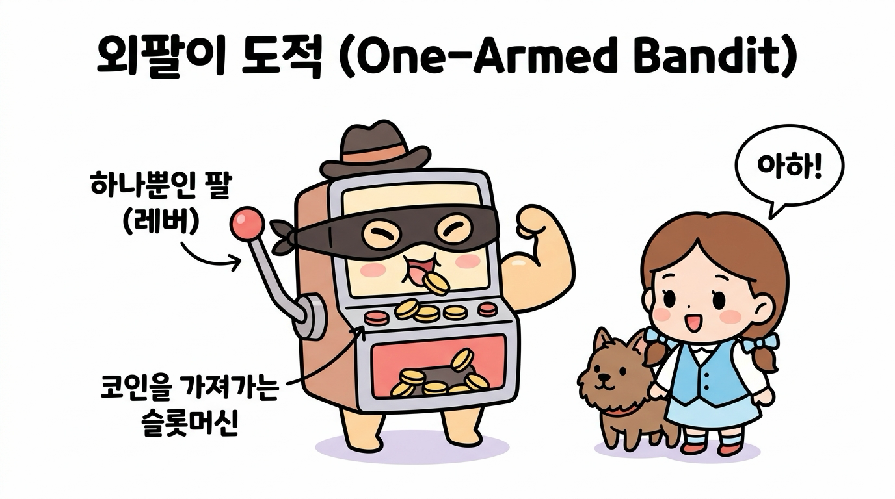
멀티-암드 밴디트
강화 학습에서 다루는 진짜 문제는 멀티-암드 밴디트 문제multi-armed bandit problem라고 부릅니다. 직역하면 ‘팔이 여러 개 달린 도적’이라는 뜻이죠.
이는 한마디로 아래 그림과 같이 여러 대의 슬롯머신이 일렬로 놓여 있는 상황을 의미합니다.
그림 3-5 멀티-암드 밴디트는 슬롯머신이 여러 대인 문제와 같다.
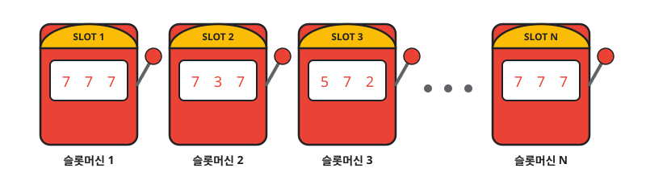
왜 슬롯머신이 여러 대(멀티 암드)인 상황을 다룰까요?
- 단일 슬롯머신과의 차이: 슬롯머신이 1대뿐이라면 고민할 필요 없이 그 레버만 당기면 됩니다.
- 불확실성과 선택의 딜레마: 하지만 서로 다른 당첨 확률을 가진 여러 대의 슬롯머신이 놓여 있고, 어떤 기계가 돈을 잘 주는지 사전에 모르는 상황이라면 우리는 매 순간 “어떤 슬롯머신의 레버를 당겨야 할까?”라는 선택의 기로에 서게 됩니다.
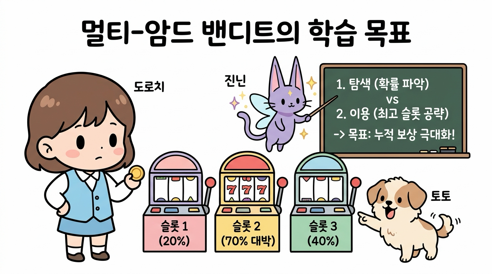
앞으로 우리가 학습할 핵심 목표
- 탐색(Exploration)과 이용(Exploitation)의 균형:
- 탐색: 각 슬롯머신의 당첨 확률을 알아내기 위해 여러 기계를 골고루 당겨보는 행위
- 이용: 지금까지 확인된 정보 중 가장 승률이 높았던 최고의 기계를 집중적으로 당기는 행위
- 누적 보상(Total Reward)의 극대화:
- 제한된 기회(코인 개수) 안에서 최소한의 시행착오로 대박 슬롯머신을 빠르게 찾아내어, 최종적으로 얻는 전체 코인의 총합을 최대로 만드는 최적의 전략(알고리즘)을 수립하는 것이 밴디트 문제의 궁극적인 목표입니다.
3.2.2 초보자를 위한 확률 기초 다지기 (주사위 비유)
수학이나 확률을 배워본 적이 없어도 괜찮습니다!
우리가 매일 접할 수 있는 주사위 던지기를 가지고 확률의 가장 핵심적인 두 가지 개념인 독립사건과 조건부 확률을 완벽하게 마스터해 보겠습니다.
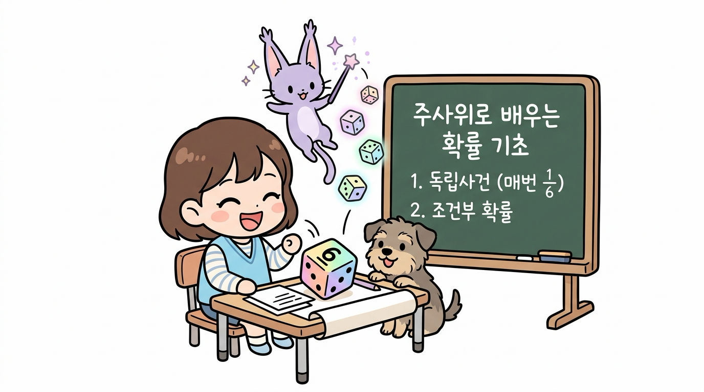
1. 주사위로 독립사건 이해하기
우리가 주사위를 한 번 던졌을 때 숫자 6이 나올 확률은 얼마일까요?
전체 눈이 6개이므로 당연히 1/6 (약 16.6%)입니다.
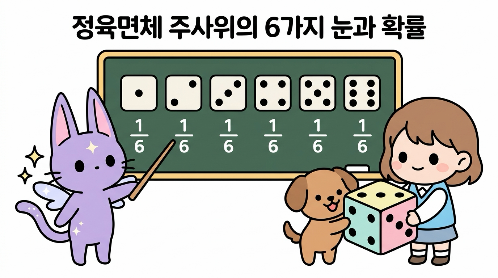
방금 주사위를 던져서 아주 운 좋게 6이 나왔다고 해봅시다.
다음 판에 다시 주사위를 던졌을 때 또다시 6이 나올 확률은 이전보다 떨어지거나 올라갈까요?
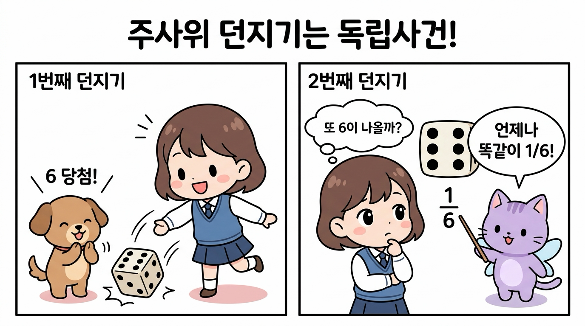
정답은 “그대로 1/6”입니다. 이전에 대박이 터졌든 꽝이 나왔든 간에, 주사위를 새로 굴릴 때마다 과거의 기억은 깨끗이 잊혀지고 매번 동일한 확률(1/6)로 처음부터 다시 굴려집니다.
독립사건
“이전에 무슨 결과가 나왔든지 간에, 지금 일어나는 결과에는 0.0001%도 영향을 주지 않고 매번 리셋되는 독립적인 사건”을 독립사건(Independent Events)이라고 부릅니다.
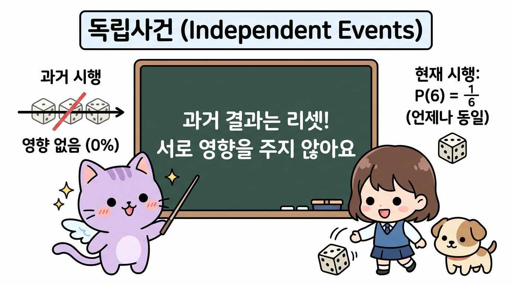
확률의 총합은 항상 1입니다
주사위를 던졌을 때 나올 수 있는 눈은 {1, 2, 3, 4, 5, 6} 총 6가지입니다. 각각의 눈이 나올 확률은 전부 1/6로 동일합니다.
이 모든 확률을 전부 더해보면 어떻게 될까요?
\[\frac{1}{6} + \frac{1}{6} + \frac{1}{6} + \frac{1}{6} + \frac{1}{6} + \frac{1}{6} = \frac{6}{6} = 1\]합이 정확히 1 (백분율로는 100%)이 됩니다.
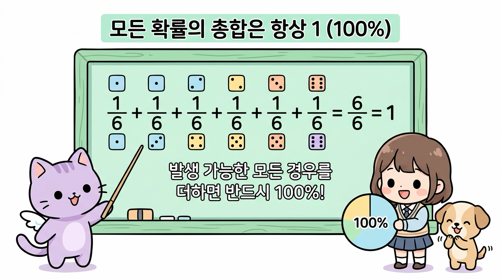
주사위를 던지면 1부터 6까지의 눈 중 어느 하나는 반드시(100% 확률로) 나오기 때문입니다. 이처럼 어떤 실행에서 발생 가능한 모든 개별 사건의 확률을 다 더하면, 그 합은 언제나 예외 없이 정확히 1(100%)이 됩니다.
2. 주사위로 조건부 확률과 칸막이 기호 ‘|’ 이해하기
이번에는 주사위를 굴린 뒤 손으로 컵을 덮어 가렸습니다. 친구가 컵 안을 살짝 보더니 힌트를 줍니다.
“어! 굴려진 주사위 눈이 ‘짝수’네!”
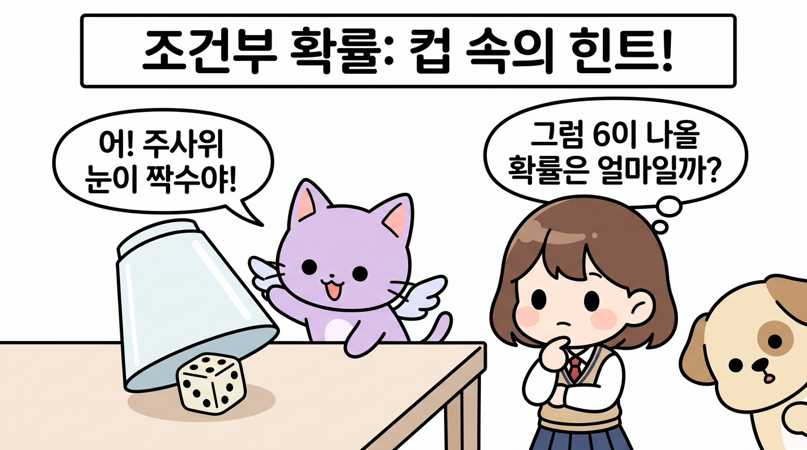
이 말을 들은 상태에서, 주사위 눈이 6일 확률은 얼마일까요?
친구가 힌트를 주기 전에는 전체 6가지 눈 중에서 6이 나와야 하므로 확률이 1/6이었습니다. 하지만 “짝수가 나왔다”는 새로운 조건을 알게 되는 순간, 전체 세상이 홀수(1, 3, 5)는 싹 제외되고 오직 짝수 집합 {2, 4, 6}이라는 3가지 가능성으로 좁아집니다!
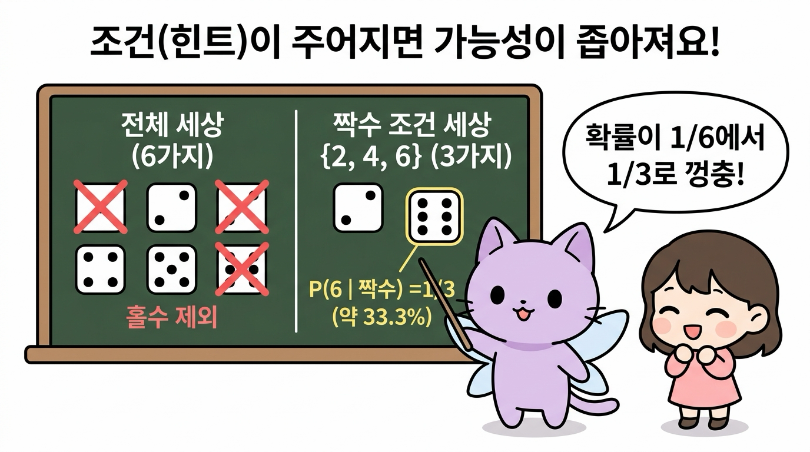
그 좁아진 3가지 가능성 중에서 우리가 알고 싶어 하는 목표 눈인 6은 단 1개뿐입니다.
따라서 확률은 1/3 (약 33.3%)로 껑충 뛰게 됩니다.
조건부확율
이처럼 “어떤 선행 조건(힌트)이 주어졌을 때, 다른 사건이 일어날 확률”을 조건부 확률(Conditional Probability)이라고 합니다.
그림 3-6 주사위 비유를 통한 조건부 확률의 필터링 원리
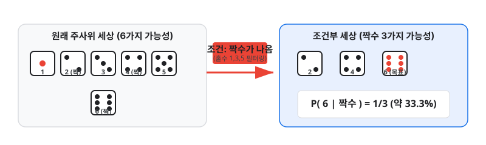
수학적 표현
수학에서는 이를 표현하기 위해 수직선 기호 |를 사용하여 다음과 같이 표기합니다.
\(P(B \mid A)\)
여기서 쓰이는 수직선 기호 | (수학에서는 ‘바/bar’ 혹은 ‘given’이라고 읽습니다)는 일종의 ‘조건을 나누는 칸막이(벽)’라고 생각하면 됩니다.
- 오른쪽 영역 (A): 이미 알고 있거나 확정된 ‘선행 조건 (힌트)’입니다. (예: “짝수가 나왔다”)
- 왼쪽 영역 (B): 그 조건 안에서 우리가 ‘진짜 관심 있게 구하고자 하는 결과 사건’입니다. (예: “눈이 6이다”)
|  |
확률 기호 P의 유래
수학에서 확률을 나타낼 때 사용하는 대표적인 대문자 기호 P는 ‘확률’을 뜻하는 영어 단어 Probability (프로바빌리티)의 첫 글자에서 유래했습니다.
이 단어는 라틴어 probabilitas (프로바빌리타스)에 뿌리를 두고 있으며, 본래 ‘검증할 수 있음’, ‘그럴듯함(개연성)’이라는 의미를 지니고 있었습니다.
즉, 어떤 사건이 실제로 일어날 법한 정도(개연성)를 0부터 1 사이의 숫자로 정밀하게 계량화한 척도가 바로 확률 P입니다.
앞으로 강화학습 수식에서 P(·)를 마주칠 때마다 “해당 행동이나 보상이 발생할 가능성의 크기”로 이해하면 쉽습니다.
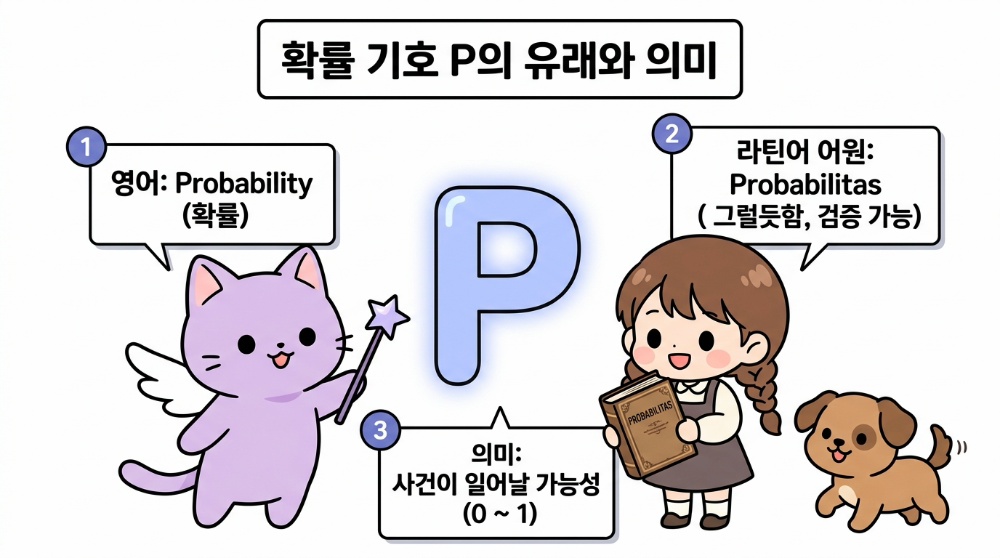
3.2.3 밴디트 문제 해결을 위한 확률 적용
이제 방금 배운 주사위 확률 개념(독립사건, 조건부 확률)을 우리가 해결하려는 밴디트 문제(슬롯머신)에 그대로 적용해 보겠습니다.
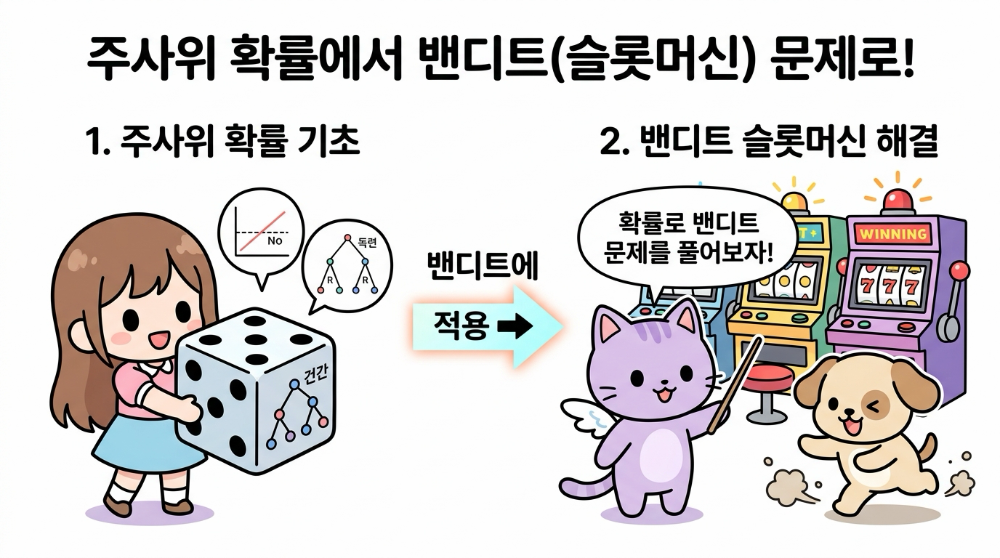
1. 슬롯머신과 독립사건
오락실이나 카지노의 슬롯머신은 주사위와 마찬가지로 철저히 독립사건으로 동작합니다.
[질문] 연속으로 꽝이 나오면 다음 판 잭팟 확률이 높아질까?
만약 어떤 사람이 “이 슬롯머신에서 방금 10판 연속으로 꽝이 나왔으니까, 이번 11번째 판에는 잭팟이 터질 확률이 엄청 높아졌을 거야!”라고 굳게 믿는다면 과연 그럴까요?
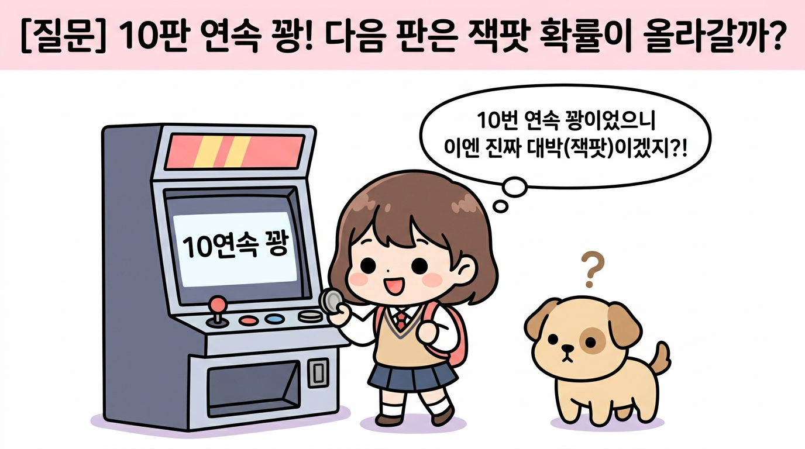
[답변] 아니요! 슬롯머신은 이전 결과를 기억하지 못합니다
정답은 “전혀 그렇지 않다(확률은 그대로)”입니다. 이를 통계학과 심리학에서는 ‘도박사의 오류(Gambler’s Fallacy)’라고 부릅니다.
과거에 10판 연속으로 돈을 잃었든 100판 연속으로 꽝이 나왔든 간에, 슬롯머신은 내부에 과거의 기억이 전혀 남아있지 않습니다. 손잡이를 새로 당길 때마다 매번 완전히 리셋된 독립적인 시행이 시작되며, 잭팟이 터질 확률은 항상 처음과 동일한 고정 확률로 유지됩니다.
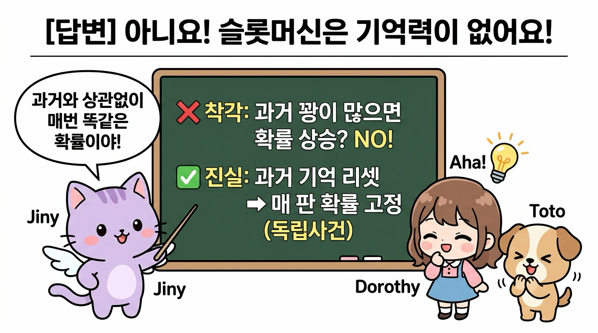
2. 슬롯머신과 조건부 확률
우리가 일렬로 늘어선 여러 대의 슬롯머신 앞에 서 있을 때는 어떠할까요?
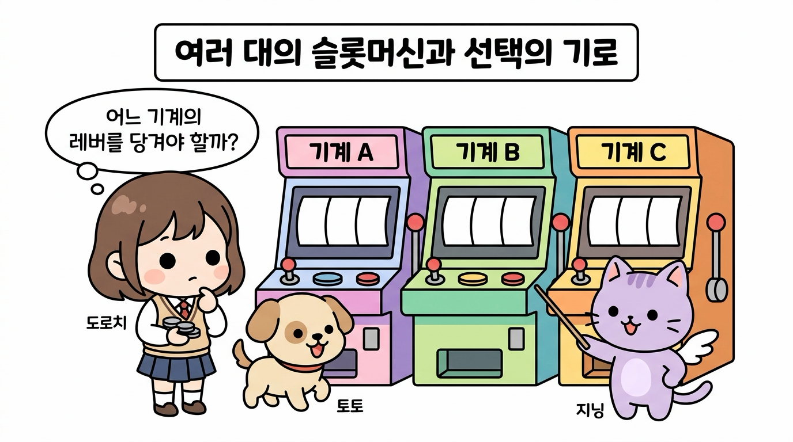
“내가 어떤 기계를 선택하는가(행동 A)”는 주사위 비유에서 ‘짝수가 나왔다’와 같은 ‘선행 조건’이 됩니다.
그리고 그 기계에서 “코인을 몇 개 얻을 것인가(보상 R)”는 조건 하에 일어나는 ‘결과 사건’입니다.
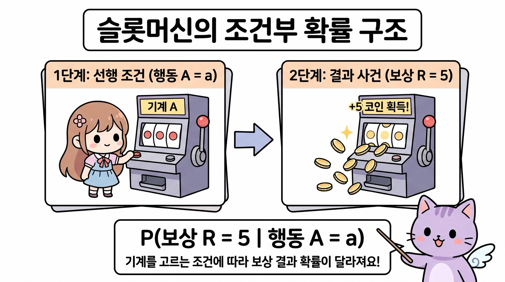
수학적 표현
예를 들어, “내가 슬롯머신 a를 선택하여 손잡이를 당겼을 때(조건),
보상으로 코인 5개를 얻을 조건부 확률”은 수학 기호로 다음과 같이 아주 세련되게 표현할 수 있습니다.
\[P(R = 5 \mid A = a)\]- 읽는 방법: “행동 A가 a일 때(조건), 보상 R이 5가 될 조건부 확률”
그림 3-8 조건부 확률의 칸막이 기호 | 이해하기
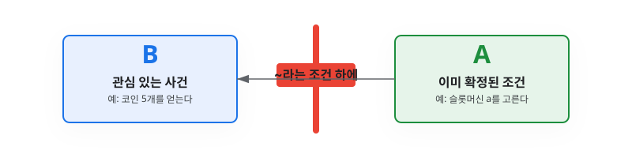
트리 다이어그램
이러한 선택 조건에 따른 보상 획득 구조를 트리 다이어그램으로 펼쳐보면 다음과 같습니다.
그림 3-9 밴디트 문제에서의 조건부 확률 트리
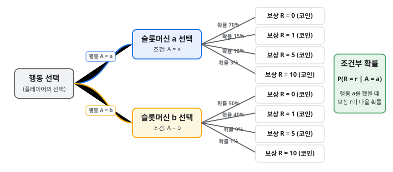
에이전트(플레이어)는 슬롯머신마다 각 보상 액수(R = 0, 1, 5, 10)가 나올 조건부 확률 분포가 서로 다르다는 사실을 인지하고, 어떤 기계를 당겨야 평균 보상이 가장 높을지 조건부 기댓값(가치)을 비교하게 됩니다.
3.2.4 [수학공부] 확률변수, 확률분포, 그리고 기댓값
슬롯머신이 코인을 뱉어내는 규칙을 본격적으로 비교하기 전에, 앞으로 계속해서 마주하게 될 세 가지 핵심 확률 용어인 확률변수, 확률분포, 그리고 기댓값에 대해 깊이 알아봅시다.
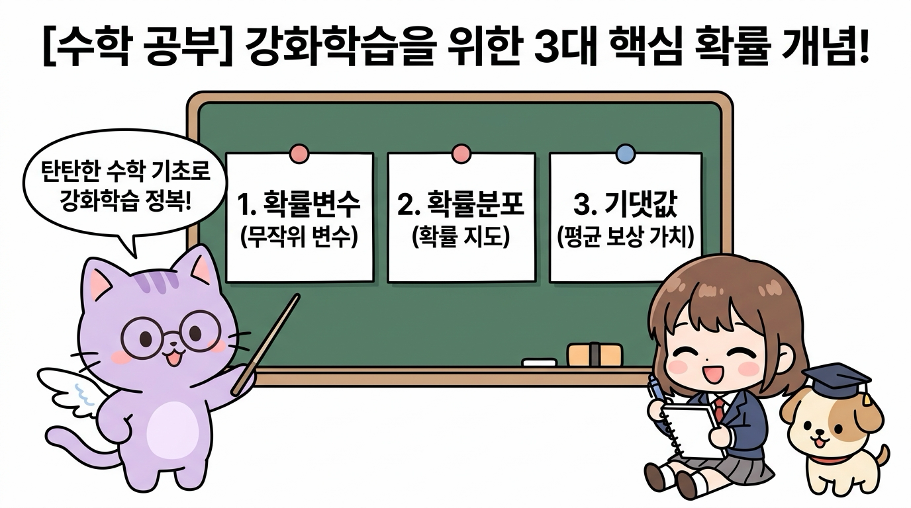
1. 확률변수 (Random Variable) - “값이 무작위로 결정되는 특별한 변수”
수학에서 확률변수는 어떤 값이 들어갈지 사전에 알 수 없기 때문에 관례상 대문자(예: X, R, A)로 표기합니다.
마치 프로그래밍에서 변수를 먼저 선언(let X;)해 두고, 실행 시점에 결정된 구체적인 리터럴 값을 변수에 대입(X = 6;)하는 것과 같습니다.
- 대문자 (X, R): 어떤 값이 들어올지 모르는 확률변수(Variable) 상자 자체를 뜻합니다.
- 소문자 또는 구체적 숫자 (x, r = 5): 실험이나 행동의 결과로 실제로 측정되어 변수에 담긴 구체적인 실현값(Literal Value)을 뜻합니다.
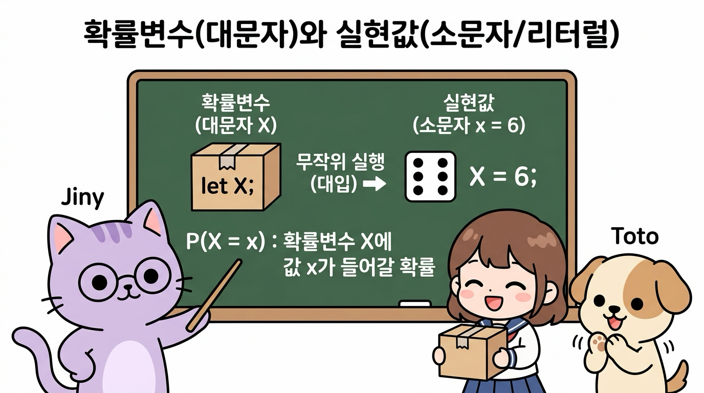
따라서 수학이나 강화학습 수식에서 P(X = x)나 P(R = 5)라는 표현을 보면, “확률변수 상자 X에 특정 리터럴 값 x(또는 보상 5)가 대입되어 나타날 확률”로 이해하면 아주 직관적입니다.
확률변수와 가능한 결과 집합(그룹)
확률변수에 들어갈 수 있는 실현값은 무한정 아무 값이나 들어오는 것이 아니라, “발생 가능한 후보 결과들의 모임인 집합(Set / 표본공간)” 안에서만 선택됩니다.
수학에서는 이 후보군 그룹을 중괄호 { }로 묶어 표현하며, 기호 ∈는 “해당 집합 그룹의 원소로 속해 있다”는 뜻을 나타냅니다.
- 주사위 집합 그룹: 주사위를 굴렸을 때 나올 수 있는 눈의 집합 {1, 2, 3, 4, 5, 6} 중 하나가 선택됩니다. \(x \in \{1, 2, 3, 4, 5, 6\}\)
- 슬롯머신 보상 집합 그룹: 슬롯머신이 지급할 수 있는 코인 보상의 집합 {0, 1, 5, 10} 중 하나가 선택됩니다. \(r \in \{0, 1, 5, 10\}\)
프로그래밍에 비유하자면, const PossibleRewards = [0, 1, 5, 10];이라는 후보 배열(집합 그룹)이 사전에 정의되어 있고, 슬롯머신 레버를 당길 때마다 이 배열 안의 원소 중 하나가 무작위로 선택되어 변수 R에 할당(R = r;)되는 것과 완전히 동일합니다.
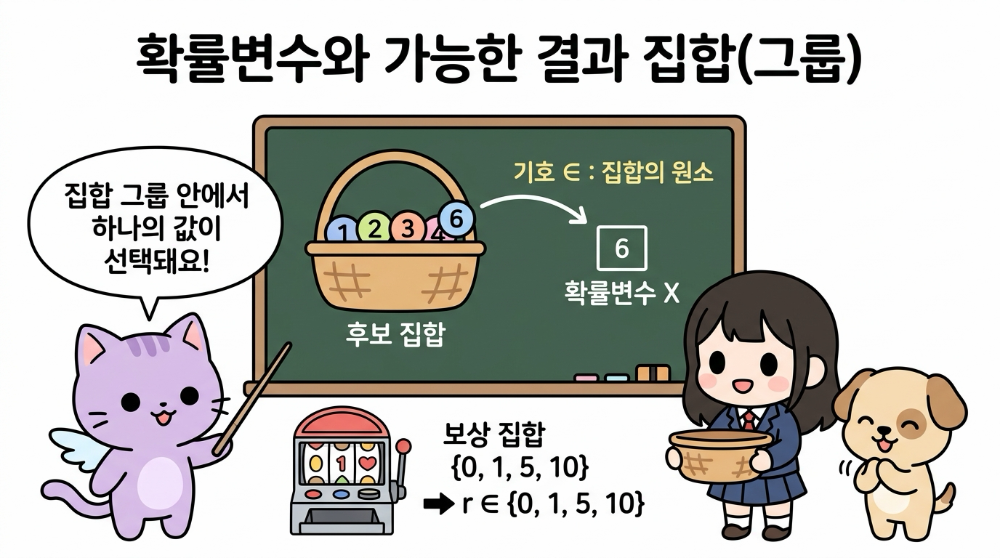
2. 확률분포 (Probability Distribution) - “확률이 각각 어떻게 흩어져(분포해) 있는지 알려주는 지도”
확률변수 X가 가질 수 있는 모든 가능한 값들에 대해, 각각의 결과가 몇 퍼센트(%) 확률로 나타나는지 그 구체적인 비율을 표나 그림으로 일목요연하게 펼쳐놓은 청사진을 확률분포(Probability Distribution)라고 합니다.
마치 지도(Map)를 보면 어느 지역에 무엇이 있는지 한눈에 알 수 있듯이, 확률분포를 확인하면 어떤 결과가 자주 발생하고 어떤 결과가 드물게 터지는지 그 전체적인 확률 지형을 명확하게 파악할 수 있습니다.
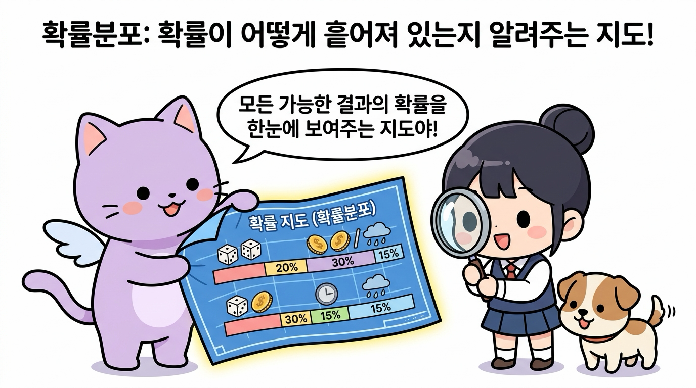
확률분포의 구체적 예시
1. 주사위 눈의 확률분포 (균등분포) 일반적인 6면체 주사위를 던질 때 나오는 눈 X는 모든 눈(1~6)이 동일하게 1/6 (약 16.6%)의 균등한 확률을 가집니다.
| X의 값 (주사위 눈) | 1 | 2 | 3 | 4 | 5 | 6 |
|---|---|---|---|---|---|---|
| 발생 확률 | 1/6 | 1/6 | 1/6 | 1/6 | 1/6 | 1/6 |
2. 슬롯머신의 보상 확률분포 (불균등분포) 반면 오락실 슬롯머신은 보상 액수마다 터질 확률이 서로 다릅니다. 예를 들어 꽝(0개)은 70%로 자주 터지지만, 대박 잭팟(10개)은 2%로 아주 드물게 발생합니다.
| R의 값 (코인 보상) | 0개 (꽝) | 1개 | 5개 | 10개 (잭팟) |
|---|---|---|---|---|
| 발생 확률 | 70% (0.70) | 20% (0.20) | 8% (0.08) | 2% (0.02) |
중요한 점은 주사위든 슬롯머신이든 “모든 발생 가능한 확률을 전부 더하면 항상 100% (1)”가 된다는 점입니다.
강화학습 에이전트는 바로 이 슬롯머신별 보상 확률분포의 차이를 탐색을 통해 파악해 나가게 됩니다.
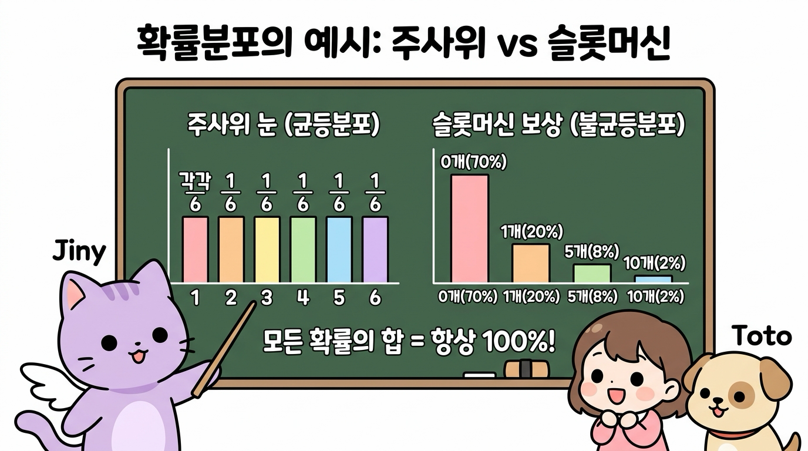
3. 기댓값 (Expected Value) - “무한히 반복했을 때 평균적으로 얻을 수 있는 값”
기댓값(Expected Value, 보통 𝔼[X] 또는 E[X]로 표기)은 확률변수가 가질 수 있는 여러 무작위 결과들을 수없이 반복해서 실행했을 때, “평균적으로 얻을 수 있을 것으로 기대되는 진짜 수학적 가치”를 뜻합니다.
단 한 번의 시행에서는 운에 따라 대박이 터지거나 꽝이 나올 수 있지만, 시행 횟수가 수백 번, 수천 번으로 늘어날수록 평균 획득 보상은 결국 이 기댓값으로 수렴하게 됩니다.
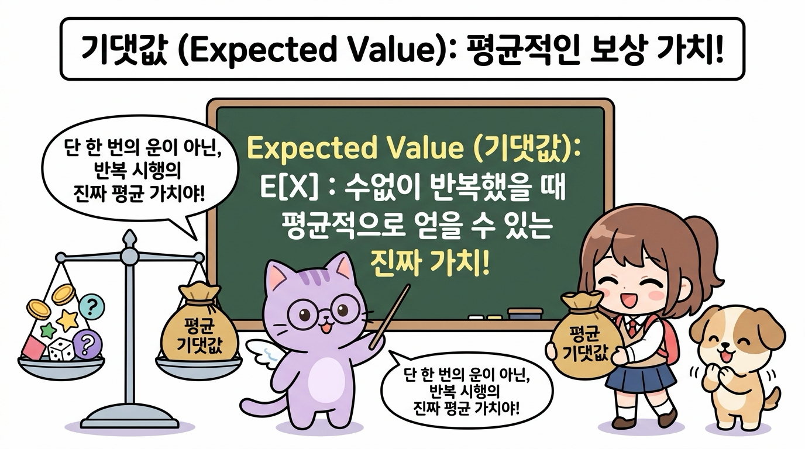
기댓값의 계산 원리와 예시
기댓값을 구하는 공식은 아주 직관적입니다. “나올 수 있는 각각의 실현값에 그 값이 발생할 확률을 곱한 뒤, 이를 전부 더하는 것”입니다.
\[\mathbb{E}[X] = \sum (\text{값} \times \text{확률})\]이해를 돕기 위해 추첨 이벤트(룰렛 돌리기)를 예로 들어보겠습니다.
- 1등 당첨 금액: 1,000원 (확률 10%, 즉 0.10) → 1,000 × 0.10 = 100원
- 2등 당첨 금액: 500원 (확률 20%, 즉 0.20) → 500 × 0.20 = 100원
- 꽝일 때 금액: 0원 (확률 70%, 즉 0.70) → 0 × 0.70 = 0원
이 이벤트에 참여했을 때 한 판당 평균적으로 기대할 수 있는 기댓값은 다음과 같이 계산됩니다.
\[\text{기댓값 } \mathbb{E}[X] = (1,000 \times 0.10) + (500 \times 0.20) + (0 \times 0.70) = 100 + 100 + 0 = 200\text{원}\]즉, 이 이벤트의 기댓값은 200원입니다. 단 한 번만 뽑았을 때는 200원이라는 금액을 정확히 받을 수 없지만(1,000원, 500원, 0원 중 하나만 받으므로), 이 이벤트를 수없이 반복해서 플레이한다면 한 판당 평균 200원씩 가져가게 됨을 수학적으로 보장합니다.
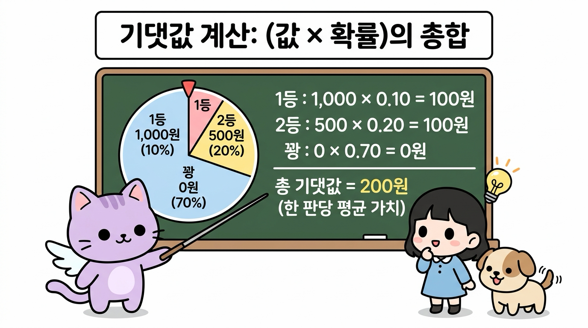
강화학습 에이전트 역시 각 슬롯머신(행동)을 반복 플레이했을 때 보상의 기댓값이 가장 높은 최적의 기계를 찾아내도록 학습하게 됩니다.
3.2.5 좋은 슬롯머신이란 무엇일까요
슬롯머신마다 내부에 설정된 코인 잭팟 확률분포가 다릅니다.
당연히 우리는 승률이 좋고 코인을 많이 주는 슬롯머신을 고르고 싶을 것입니다. 이를 앞서 배운 확률 도구를 사용해 객관적으로 가려내 보겠습니다.
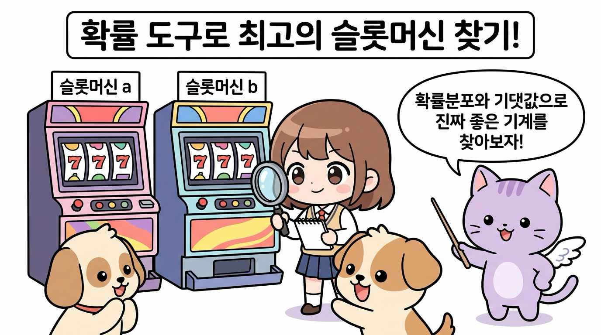
1. 두 슬롯머신의 확률분포 비교
예를 들어 두 대의 슬롯머신 a와 b가 있고, 각각의 보상과 확률분포가 아래 표처럼 서로 다르게 설정되어 있다고 가정해 봅시다.
슬롯머신 a의 확률분포표 (고액 잭팟형)
| 얻을 수 있는 동전 개수 (R) | 0개 (꽝) | 1개 | 5개 | 10개 (잭팟) |
|---|---|---|---|---|
| 발생 확률 | 0.70 (70%) | 0.15 (15%) | 0.12 (12%) | 0.03 (3%) |
슬롯머신 b의 확률분포표 (소액 안정형)
| 얻을 수 있는 동전 개수 (R) | 0개 (꽝) | 1개 | 5개 | 10개 (잭팟) |
|---|---|---|---|---|
| 발생 확률 | 0.50 (50%) | 0.40 (40%) | 0.09 (9%) | 0.01 (1%) |
- 슬롯머신 a의 특징: 꽝 확률이 70%로 높지만, 5개(12%)와 10개(3%) 같은 고액 보상이 터질 확률이 상대적으로 높습니다.
- 슬롯머신 b의 특징: 꽝 확률이 50%로 낮고 동전 1개(40%)가 자주 나오지만, 5개(9%)나 10개(1%) 같은 고액 대박 확률은 낮습니다.
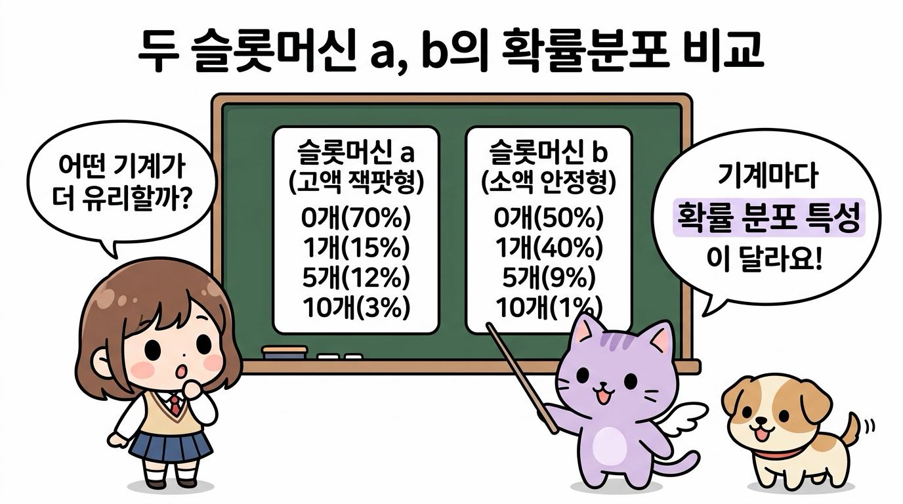
각 슬롯머신의 확률 총합 검증
보통 실제 환경에서는 이 내부 확률분포표를 사전에 알 수 없지만, 만약 알 수 있다면 어떤 기계를 선택해야 장기적으로 코인을 가장 많이 모을 수 있을까요?
여기서도 앞서 배운 “확률의 총합은 항상 1(100%)”이라는 대원칙이 완벽하게 성립합니다.
\(\text{슬롯머신 a: } 0.70 + 0.15 + 0.12 + 0.03 = 1.00 \ (100\%)\) \(\text{슬롯머신 b: } 0.50 + 0.40 + 0.09 + 0.01 = 1.00 \ (100\%)\)
주사위를 던졌을 때 1~6 눈 중 하나가 반드시 나오듯, 슬롯머신의 레버를 당기면 코인 0개, 1개, 5개, 10개 중 어느 하나의 결과는 100% 확률로 반드시 발생하기 때문에 개별 확률의 총합은 언제나 예외 없이 정확히 1 (100%)이 됩니다.
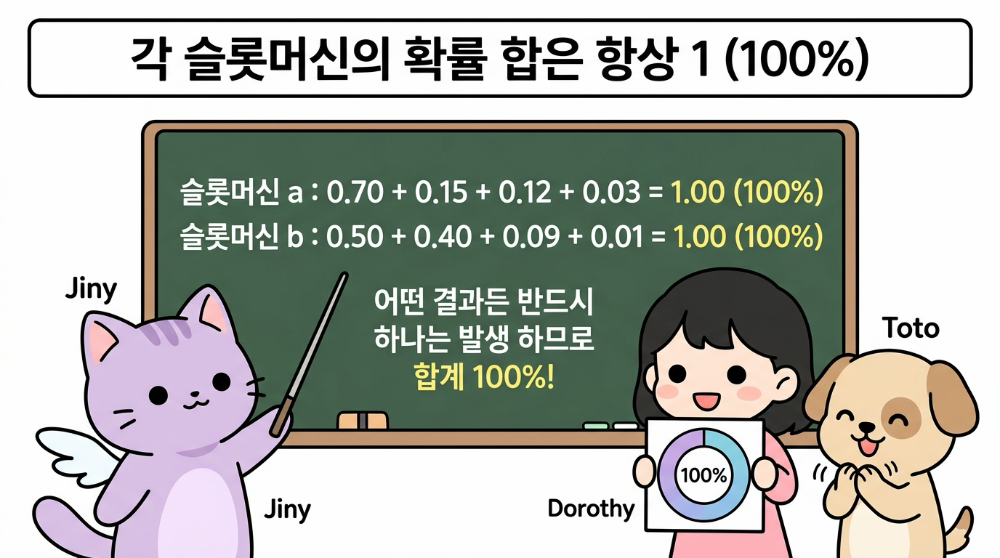
2. 두 슬롯머신의 기댓값 비교와 선택
어떤 슬롯머신이 더 좋은 기계일까요?
- 슬롯머신 b는 꽝 확률이 50%로 낮아서(당첨 확률 50%) 얼핏 보면 더 자주 따는 좋은 기계처럼 보입니다.
- 반면 슬롯머신 a는 꽝 확률이 70%나 되어 언뜻 보면 손해를 많이 볼 것 같습니다.
하지만 사람의 직관이나 일시적인 승률에 현혹되지 않고, 장기적으로 플레이했을 때 진짜 더 많은 코인을 벌어다 주는 기계를 객관적이고 수학적으로 가려내는 기준이 바로 기댓값expectation value입니다.
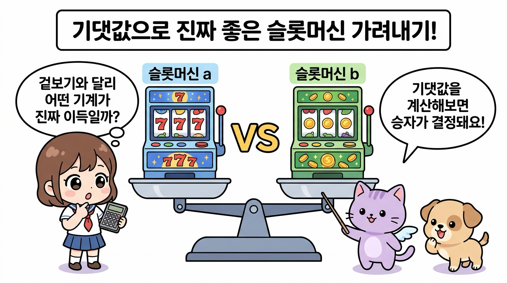
앞서 배운 기댓값 공식(모든 가능한 결과에 각각의 발생 확률을 곱하여 모두 더한 값)을 적용해 두 기계의 기댓값을 정밀하게 계산해 보겠습니다.
\[\text{슬롯머신 a의 기댓값 } \mathbb{E}[X_a] = (0 \times 0.70) + (1 \times 0.15) + (5 \times 0.12) + (10 \times 0.03) = 1.05 \text{ 코인}\] \[\text{슬롯머신 b의 기댓값 } \mathbb{E}[X_b] = (0 \times 0.50) + (1 \times 0.40) + (5 \times 0.09) + (10 \times 0.01) = 0.95 \text{ 코인}\]- 수학적 계산 결과:
- 슬롯머신 a를 플레이하면 레버를 한 번 당길 때마다 평균적으로 1.05개의 코인을 기대할 수 있습니다.
- 슬롯머신 b를 플레이하면 레버를 한 번 당길 때마다 평균적으로 0.95개의 코인을 기대할 수 있습니다.
- 합리적 의사결정:
- 비록 슬롯머신 b가 자잘하게 자주 당첨되는 느낌을 주더라도, 대박 보상 확률이 더 높은 슬롯머신 a가 장기적으로 판당 0.10개씩 더 많은 코인을 안겨주는 우수한 기계입니다.
- 따라서 장기적인 수익을 극대화하려면 망설임 없이 슬롯머신 a를 선택해야 합니다.
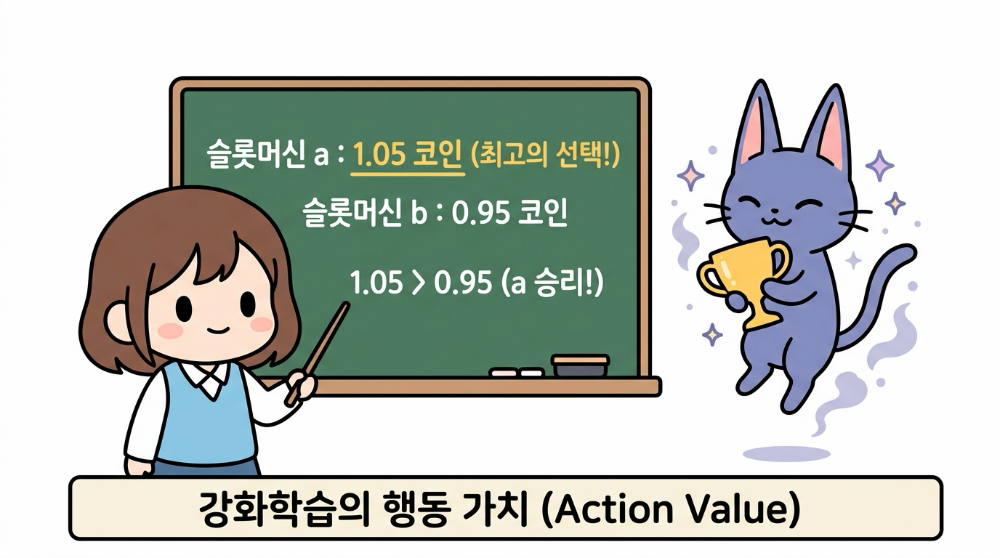
NOTE_ 행동 가치(Action Value)와의 연결 강화 학습에서는 특정 행동(A = a)을 취했을 때 얻게 될 보상(R)의 기댓값을 특별히 행동 가치action value 또는 가치value라고 부르며, 수식으로는 보통 Q(a) 또는 q</sub>(a*)로 표기합니다.
\[Q(a) = \mathbb{E}[R \mid A = a]\]강화 학습 에이전트의 궁극적인 목표는 각 행동의 가치를 스스로 학습하여, 행동 가치(기댓값)가 가장 높은 최적의 행동을 선택하는 것입니다.
3.2.6 강화 학습 용어로 정리하는 밴디트 메커니즘
지금까지 살펴본 슬롯머신 문제를 강화 학습 학계의 공식 표준 프레임워크로 체계화해 보겠습니다. 밴디트 문제는 복잡한 강화 학습의 핵심 원리를 가장 단순하고 명확하게 축약해 놓은 ‘강화 학습의 기본 모델’입니다.
강화 학습의 4대 핵심 구성 요소는 다음과 같이 매핑됩니다.
- 에이전트 (Agent): 어떤 슬롯머신을 당길지 스스로 고민하고 의사결정을 내려 행동을 실행하는 주체인 플레이어 (또는 AI 알고리즘)입니다.
- 환경 (Environment): 에이전트를 둘러싼 외부 세계이자 상호작용의 대상인 슬롯머신 기계들입니다.
- 행동 (Action, A 또는 At): 에이전트가 매 시점(t)마다 선택할 수 있는 대안으로, 여러 기계 중 하나를 골라 레버를 당기는 선택입니다. (예: 슬롯머신 a 선택 또는 b 선택)
- 보상 (Reward, R 또는 Rt): 행동을 취한 즉시 환경(슬롯머신)으로부터 주어지는 결과이자 수치적 피드백인 획득 코인 개수입니다. (예: 코인 0개, 1개, 5개, 10개)
그림 3-12 밴디트 문제와 강화학습 상호작용 루프
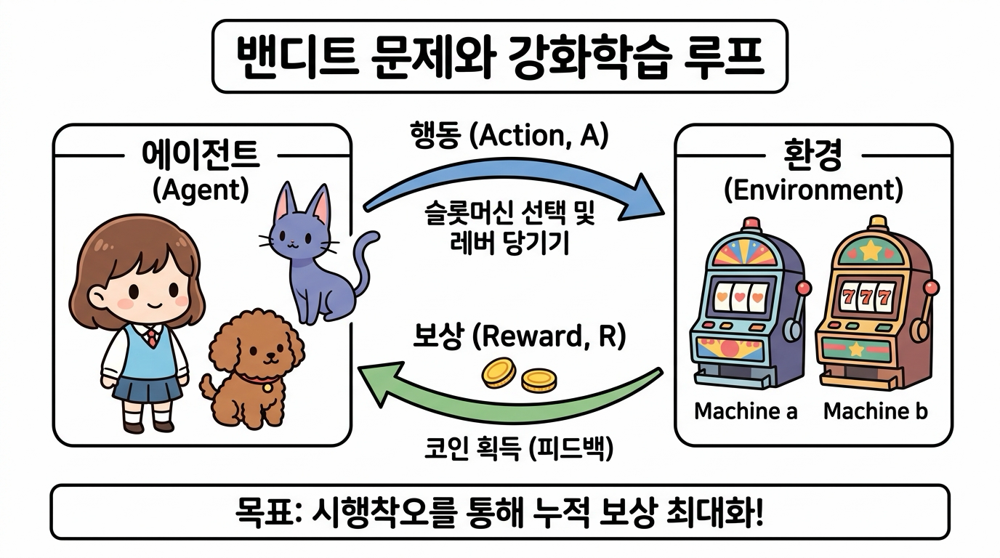
밴디트 문제와 강화 학습의 핵심 연결점
- 시행착오를 통한 학습 (Trial and Error): 에이전트는 각 슬롯머신의 내부 확률이나 진짜 기댓값을 사전에 전혀 알지 못합니다. 오직 직접 레버를 당겨보고(행동), 나오는 코인(보상)을 관찰하는 시행착오(Trial and Error) 과정을 거치며 어떤 기계가 좋은지 스스로 학습해 나갑니다.
- 누적 보상의 최대화 (Maximizing Cumulative Reward): 강화 학습의 궁극적인 목표는 한두 번의 일시적인 운에 기대는 것이 아니라, 여러 번의 기회 동안 얻을 수 있는 전체 코인의 총합(누적 보상)을 극대화하는 최적의 의사결정 전략을 찾아내는 것입니다.
NOTE_ 상태(State)가 없는 단일 상태(Stateless) 문제 일반적인 강화 학습(자율주행, 체스, 로봇 보행 등)에서는 행동을 취할 때마다 주변 상황인 상태(State, S)가 끊임없이 변화합니다. (예: 로봇이 발을 내딛으면 로봇의 위치와 균형 상태가 바뀜) 하지만 기본 밴디트 문제에서는 슬롯머신의 확률 설정이 도중에 바뀌지 않으며 판마다 상황이 독립적으로 유지되므로, 상태의 변화를 고려할 필요가 없는 가장 순수한 형태의 단일 상태(Stateless) 강화 학습입니다. (상태가 계속 변화하는 순차적 의사결정 문제는 다음 장부터 본격적으로 다룹니다.)
3.2.7 수학 기호와 읽는 방법 총정리
수학 공식에 지레겁먹을 필요 없습니다. 아래 표를 보며 하나씩 한국어로 소리 내어 읽어보면 쉽게 친숙해질 수 있습니다.
| 기호 | 수학적 의미 | 한글로 읽는 방법 | 쉬운 해설 |
|---|---|---|---|
| R | 보상 (Reward) | 알(R) | 슬롯머신에서 튀어나오는 코인의 개수입니다. |
| Rt | t번째 시점의 보상 | 알 티(R sub t) | t번째 판을 돌렸을 때 획득한 코인의 개수입니다. |
| A | 행동 (Action) | 에이(A) | 내가 취한 선택(a 기계 선택 혹은 b 선택)입니다. |
| 𝔼[R] | 보상 R의 기댓값 | 익스펙테이션 알 (또는 보상 R의 기댓값) | 수없이 많이 플레이했을 때 예상되는 평균 코인 개수입니다. |
| 𝔼[R | A = a] | 행동이 a일 때 보상 R의 조건부 기댓값 | 익스펙테이션 알 바 에이 콜론 에이 | “슬롯머신 a를 골라서 당겼을 때” 얻을 것으로 예상되는 평균 코인 갯수입니다. |
| q(A) | 행동 A의 참 가치 | 큐 에이 (q of A) | 하늘만이 알고 있는 기계의 실제 기댓값(진짜 가치)입니다. |
| Q(A) | 행동 A의 추정 가치 | 대문자 큐 에이 | 플레이어가 실제로 돌려보면서 “이 기계는 평균 이 정도 주는 것 같네” 하고 추측하는 가치입니다. |
행동 가치 공식
행동 A를 취했을 때 우리가 얻게 될 행동 가치 q(A)는 다음과 같이 수학적으로 표기할 수 있습니다.
\[q(A) = \mathbb{E}[R \mid A]\]처음 보면 복잡해 보이지만, 공식을 구성하는 4개의 기호를 하나씩 분해하여 살펴보면 매우 직관적이고 쉬운 의미를 담고 있습니다.
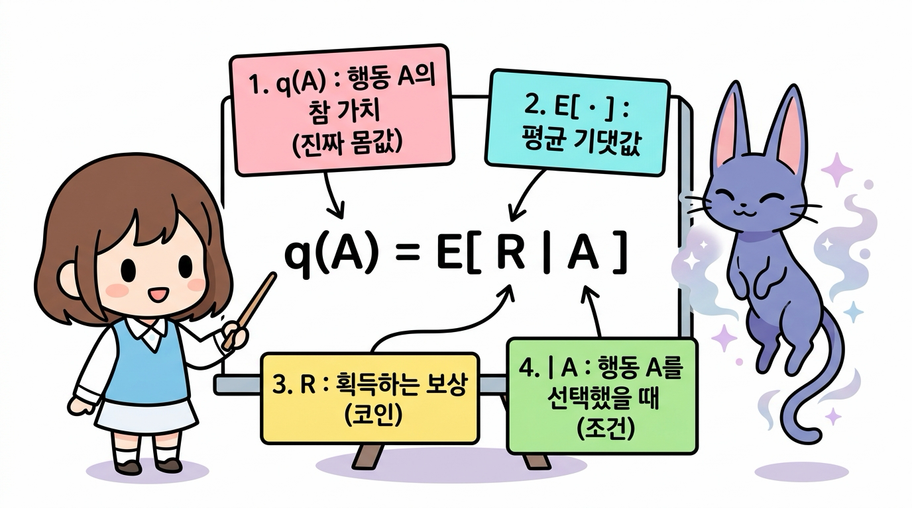
기호별 4단계 상세 분해
- 1단계. q(A) : 행동 A의 ‘참 가치(True Value)’
- 소문자 q는 세상의 진리처럼 존재하는 진짜 정답 가치(참 가치)를 뜻합니다.
- 괄호 안의 A는 에이전트의 행동(Action)을 나타냅니다. 예를 들어 슬롯머신 a를 골라 레버를 당기는 행동입니다.
- 즉, q(A)는 “행동 A가 지닌 본질적인 진짜 몸값”을 의미합니다.
- 2단계. 𝔼[ · ] : 수많은 시행의 ‘평균 기댓값(Expected Value)’
- 대문자 𝔼는 기댓값(Expectation)의 기호로, 그 행동을 수없이 많이 반복했을 때 수렴하게 될 장기적인 평균값을 계산하겠다는 뜻입니다.
- 3단계. R : 에이전트가 돌려받는 ‘보상(Reward)’
- 레버를 당겼을 때 슬롯머신이 뱉어내는 코인 개수(0개, 1개, 5개, 10개)입니다.
- 결과가 매번 확률에 따라 결정되므로 확률변수입니다.
- 4단계.
|A : ‘행동 A를 선택했을 때’라는 조건부 기호- 칸막이 기호
|뒤에 A가 붙어, “수많은 행동 중 오직 특정 기계(행동 A)를 골라 레버를 당겼을 때”라는 전제 조건을 한정합니다.
- 칸막이 기호
💡 한 줄로 읽는 행동 가치 공식 “행동 A(슬롯머신 a 플레이)를 선택했을 때(
| A), 얻게 될 보상 R들의 평균 기댓값(𝔼)이 곧 그 행동의 참 가치 q(A)이다!”
‘보상(Reward)’과 ‘가치(Value)’의 결정적 차이
강화 학습을 배울 때 가장 많이 혼동하는 두 개념이 바로 보상과 가치입니다.
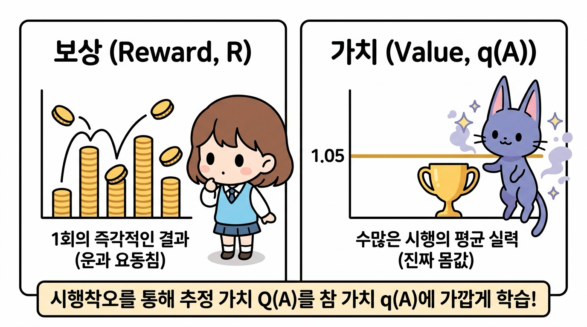
- 보상 (Reward, R): 어떤 행동을 딱 한 번 했을 때 즉시 돌려받는 1회성 결과입니다. 운에 따라 코인이 10개 쏟아지기도 하고 0개 꽝이 나오기도 하여 매 판 심하게 요동칩니다. (일시적인 행운과 불운)
- 가치 (Value, q(A)): 그 행동을 수백, 수천 번 반복했을 때 기대할 수 있는 행동 자체의 진짜 실력(평균 몸값)입니다. 예를 들어 슬롯머신 a의 한 판당 평균 코인 획득량이 1.05개라면, 슬롯머신 a를 고르는 행동의 진짜 가치는 언제나 흔들림 없이 1.05입니다.
NOTE_ 추정 가치 Q(A)와 참 가치 q(A) 에이전트는 하늘만이 알고 있는 실제 참 가치 q(A)를 처음에는 전혀 알 수 없습니다. 따라서 슬롯머신을 직접 여러 번 당겨보는 시행착오(Trial and Error)를 거치며 얻은 보상들을 바탕으로 자신만의 추정 가치 Q(A)를 계속 계산하고 업데이트합니다.
시행 횟수가 늘어날수록 추정 가치 Q(A)는 진짜 참 가치 q(A)에 완벽하게 수렴하게 되며, 에이전트는 이를 통해 가장 가치가 높은 최고의 슬롯머신을 확신을 가지고 선택할 수 있게 됩니다.
3.2.8 오늘 공부한 핵심 요약
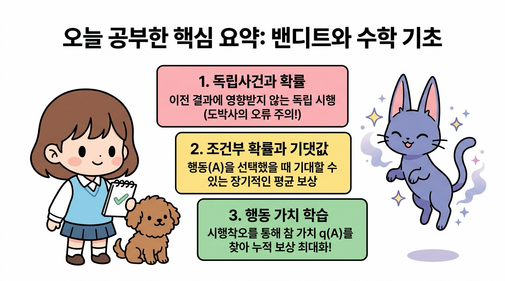
- 독립사건과 고정 확률: 슬롯머신은 이전 판의 결과가 다음 판에 영향을 주지 않는 독립사건으로 동작합니다. 따라서 “직전에 꽝이었으니 이번엔 터지겠지” 같은 직관은 수학적으로 명백한 오류(도박사의 오류)입니다.
- 조건부 확률과 기댓값: 내가 어떤 기계를 선택했는가(A = a)라는 조건 하에 주어지는 보상의 조건부 확률 구조를 통해, 각 기계의 장기적인 평균 보상 수준인 기댓값(행동 가치)을 정밀하게 계산하고 비교할 수 있습니다.
-
행동 가치 학습의 목표: 강화 학습 에이전트의 궁극적인 목표는 각 기계의 보상 기댓값인 참 가치 q(A) = 𝔼[R A]를 직접 플레이해보는 시행착오를 통해 스스로 추정(Q(A))해 내고, 누적 보상을 최대로 만들어 줄 최고의 슬롯머신을 찾아내는 것입니다.